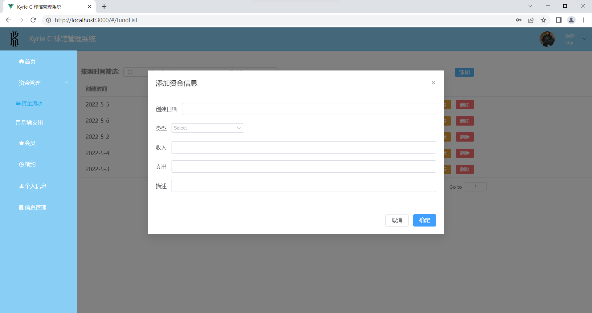

球馆管理系统
Kyrie C 球馆管理系统
基于 Vue + Node.js + mysql +elementplus 的前后端分离项目
因为是一个后台管理系统，没有花太大精力在UI设计上，突出一个简约，重点在于业务逻辑的实现
前后端连载
当你要跑起来整个项目时，需要启动后端服务器和前端，将前后端连载起来，只需要一行命令就可以一起启动前端与后端
文件相对位置: 前端模块文件夹要隶属于后端模块文件夹
安装插件: 在后端模块文件夹根目录下安装concurrently
concurrently用于将多个终端连在一起启动
1 | npm i concurrently -D |
配置package.json
来到前端模块的package.json，在scripts中给启动前端项目的命令单独取一个名字
1 | "scripts": { |
来到后端模块的package.json，在scripts中增加前端模块的依赖，就是在启动项目时先安装前端模块的依赖
1 | "scripts": { |
登陆注册页
首页
个人信息
资金流水
资金数据增删改查

最后
还是那句话，很多功能都还没来得及实现，之后会陆续完善
详细代码可前往 Github 查看
本博客所有文章除特别声明外，均采用 CC BY-NC-SA 4.0 许可协议。转载请注明来自 kyrie C！